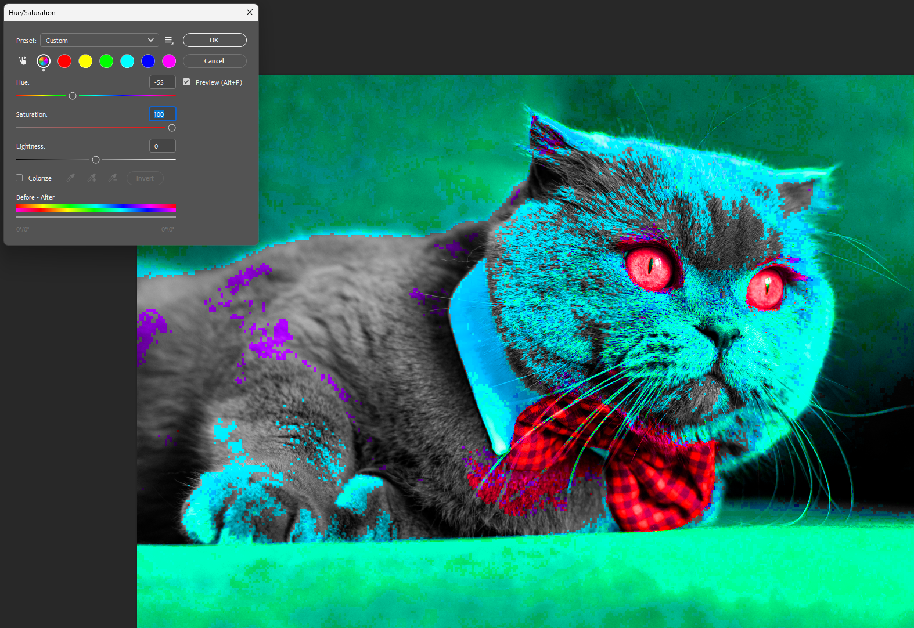

Non-Destructive Editing in Photoshop
Overview
Non-destructive editing allows you to make changes to an image without permanently altering the original pixels. Instead of editing directly on the image, you work with Adjustment Layers and Smart Objects — meaning you can always undo, tweak, or remove any change at any point without losing quality. This is the recommended way to edit in Photoshop, especially for beginners, as it gives you full creative freedom without the risk of ruining your original image.
What You Will Learn
By the end of this section, you will be able to:
- Understand the difference between destructive and non-destructive editing
- Use Adjustment Layers to edit colors and tones safely
- Convert a layer into a Smart Object to protect the original image
Before You Begin
Warning
Avoid editing directly on the Background layer — always duplicate it first by pressing Ctrl + J.
Getting Started
This section will walk you through each step of non-destructive editing in Photoshop, from opening your image to saving your final file.
Step 1: Download the Practice Image
Download the practice image here: Click to Download
Figure 1: Practice image — British Shorthair cat with bow tie
Once downloaded, locate the file in your Downloads folder — it will be saved as a .jpg file.
Step 2: Open the Image in Photoshop
- Open Photoshop
- Click [File] → [Open]
- Navigate to where you downloaded the image
- Select the image and click [Open]
Note
You can also drag and drop the image directly into Photoshop.
Step 3: Duplicate the Background Layer
Before making any edits, always duplicate your original layer to protect it. If you do not see the Layers panel, go to [Window] → [Layers] to open it.

- Right-click on the Background layer in the Layers panel
-
Select [Duplicate Layer] or press
Ctrl + J
Figure 2: Duplicating the Background layer
Warning
Never edit directly on the Background layer — always work on a duplicate.
Step 4: The Destructive Way (What NOT to Do)
This section demonstrates what happens when you edit destructively, so you understand why it should be avoided.
- Click [Image] → [Adjustments] → [Hue/Saturation]
- Drag the Hue slider to any value
-
Click [OK]

Figure 3: Adjusting Hue/Saturation destructively

Figure 4: The image is permanently changed
Warning
This permanently changes your image pixels. If you close and reopen the file, you cannot undo this change.
Warning
Before continuing, press Ctrl + Z to undo this change, or close the
file without saving and reopen it.
Step 5: The Non-Destructive Way (The Right Way)
Instead of editing the image directly, we will add an Adjustment Layer on top.
- Go to [Layer] → [New Adjustment Layer] → [Hue/Saturation]
-
Click [OK] on the dialog that appears

Figure 5: Adding a Hue/Saturation Adjustment Layer
-
Drag the Hue slider to -137

Figure 6: Adjusting the Hue slider
-
Click the eye icon (the small eye symbol on the far left of the layer row) next to the Adjustment Layer in the Layers panel to toggle it on and off

Figure 7: Toggling the Adjustment Layer on and off
-
Double-click the Adjustment Layer thumbnail at any time to go back and change the values

Figure 8: Re-editing the Adjustment Layer
Note
The Adjustment Layer sits above your image and never touches the original pixels — you can modify or delete it at any time.
Step 6: Rename Your Layers
Keeping your layers organized will save you a lot of confusion later.
- Double-click the duplicated layer's name in the Layers panel
- Type a descriptive name such as
Editing Layer -
Press
Enterto confirm
Figure 9: Renaming the layer
Step 7: Convert the Layer to a Smart Object
Converting to a Smart Object allows you to apply filters non-destructively.
- Right-click on your duplicated layer in the Layers panel
-
Click [Convert to Smart Object]

Figure 10: Converting the layer to a Smart Object
-
Confirm the conversion by looking for the small icon on the layer thumbnail

Figure 11: Smart Object icon confirming the conversion
Note
The small icon on the layer thumbnail confirms it is now a Smart Object. This means any filters you apply will be editable and non-destructive. When you double-click on it, Photoshop opens the Smart Object as a separate file (.psb). You can move any layers or content related to your edit into this Smart Object to keep things organized. Any edits made inside will apply back to your original file. Save and close the tab when done to see your changes reflected.
Step 8: Apply a Filter to the Smart Object
-
Click [Filter] → [Blur] → [Gaussian Blur]

Figure 12: Opening the Gaussian Blur filter
-
Drag the radius slider to around 5–10 pixels to see a visible blur effect on your image
-
Click [OK]

Figure 13: Adjusting the Gaussian Blur radius
Note
Because this is a Smart Object, the filter appears as a Smart Filter underneath the layer — it is fully editable at any time.

Figure 14: Smart Filter visible in the Layers panel
Step 9: Edit the Smart Filter
After applying the Gaussian Blur in Step 8, you will see the filter name listed directly beneath the Smart Object layer in the Layers panel.
- Double-click the Smart Filter name (e.g., Gaussian Blur) in the Layers panel
- Adjust the slider to a new value
- Click [OK]
Note
This is the power of non-destructive editing — you can always go back and change any filter without starting over.
Step 10: Save Your File
To preserve all your layers and edits, save as a Photoshop file.
- Click [File] → [Save As]
- Set the format to
.psd - Click [Save]
Warning
Saving as .jpg or .png will flatten all your layers and you will lose all your non-destructive edits permanently.
Bonus
To test your understanding, here is a finished Photoshop image that you should be able to recreate after going through this tutorial. It involves everything you have been taught.

Figure 15: Completed example using Adjustment Layers and Smart Objects
Conclusion
You have successfully completed the Non-Destructive Editing tutorial. You now know how to use Adjustment Layers and Smart Objects to edit images safely in Photoshop without ever permanently altering your original image. These techniques are the foundation of professional photo editing and will be used throughout the rest of your careers.